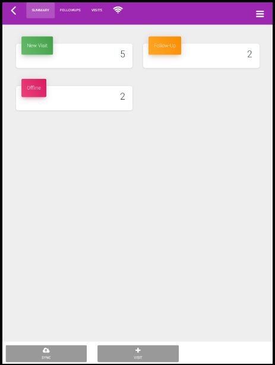

Creating a Visit¶
`
:titlesonly:
:hidden:
`
While conducting a survey, a new visit can be created either in online or offline mode depending on the network.
Note
By default, the survey is either Online or Offline based on the last entry. If the camp is in Online Mode, then the Take Offline option will be available on screen.
- Login to the App, Tap on Camps.
- Select a Camp from the list. By default, the Summary tab is open on screen.
- To create visit in the Offline Mode, tap on Take Offline. The App goes in to the processing mode fetching all the details. A Cancel Offline, Sync and Create Visit options are available onscreen.
- Tap on +Visit. A New Visit form is open where you can add basic details of the patient.
- Type in First Name and Last Name of the person using the keypad of the mobile.
- Tap on the drop-down of Gender, select either Male or Female option.
- If user selects DOB Type as Age from the drop-down then specify the Age. The Date of Birth is auto-calculated and displayed under respective text box.
- Else, if user selects DOB type as Date of Birth from the drop-down, tap on Calendar icon, select date, month and year to update the Date of Birth of the person. The age of the patient will be auto-calculated and displayed on screen.
- Provide a valid mobile number and a 12-digit Aadhaar card number for identification.
Note
While creating a visit in Online mode, if you save the details without conducting a registration or follow-up survey then you cannot modify/re-take the survey. System will prompt you to take up the survey only if certain questions are set as mandatory in the survey questionnaire.
- Scroll-down to the Registration section. A Registration questionnaire (if configured) will be available on screen.
Note
Questions configured for registration while creating a survey template will be displayed on screen.*
- Collect details and mark appropriate choices for each question listed in the form.
- Additional details of the patient can be added under the Enter Data section.
- For each question, type in text using the keypad. Documents relevant to the case, for instance,Medical reports, X-ray reports can be uploaded or captured as a photograph.
- On the Create Visit form, scroll-down to the Attachment section, select Add Document.
- Tap on |Browse Icon|Icon and select a file from the list, click Add.
- Or, Select Icon. Take a photograph and tap on Add. The photograph will be attached to the form.
- Tap on Save to store the changes.
The patient record for the visit will be created and listed under the Visits tab. The number of visits will be incremented by 1 in the Summary tab.
Note
If cache is cleared before data is synchronized then all visits created during the offline mode will be lost.
For data synchronization, select the link [Sync Offline Data] (https:///../syncofflinedata.html).